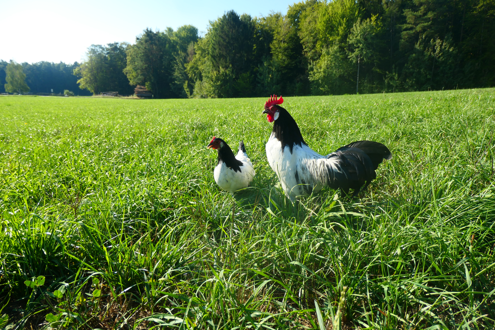
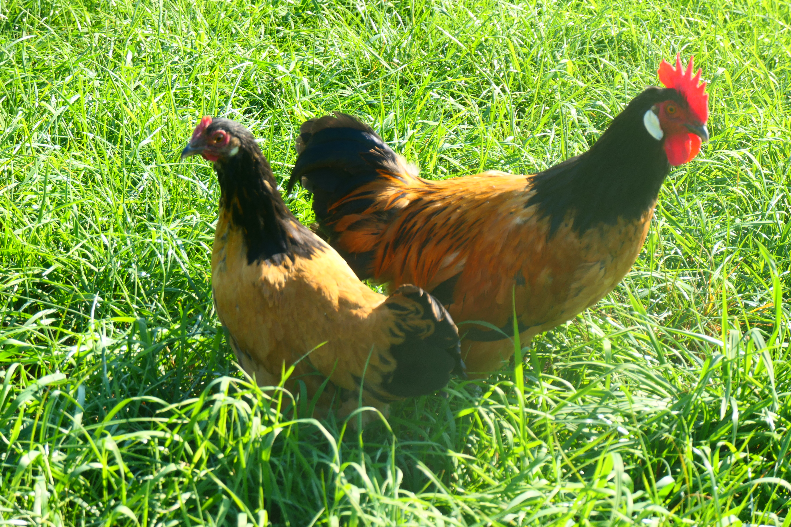
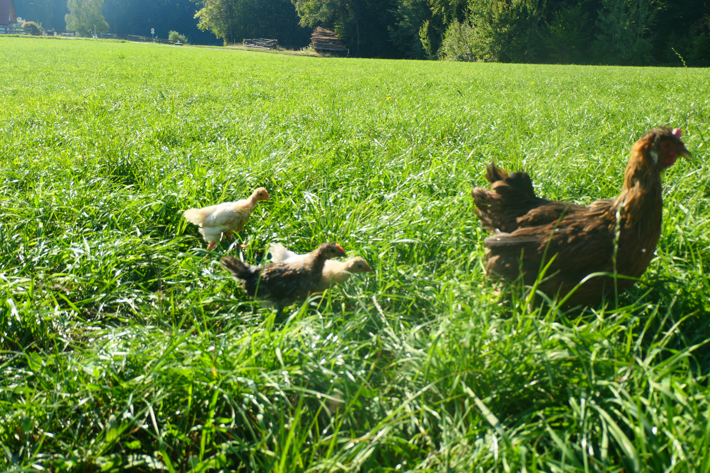
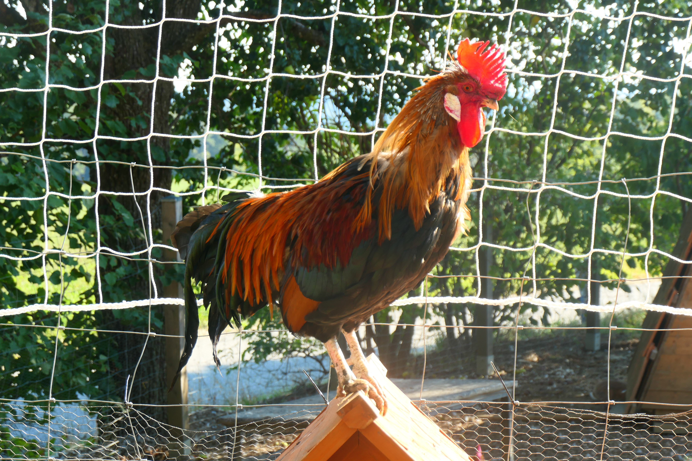
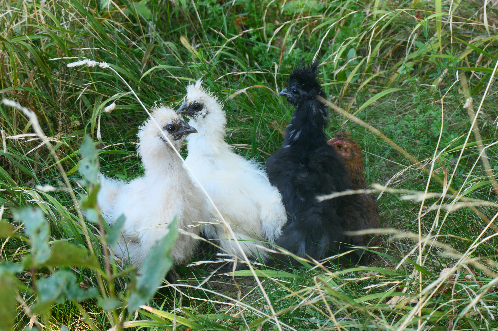
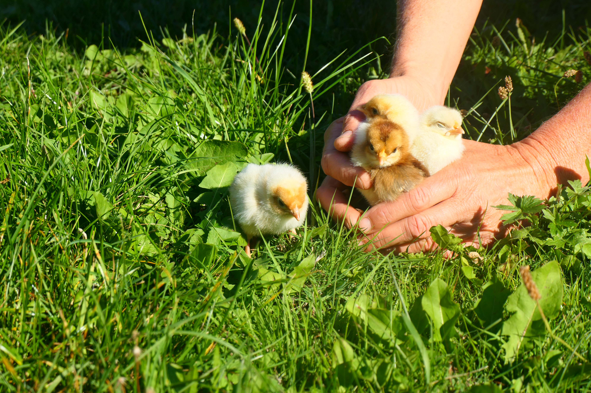
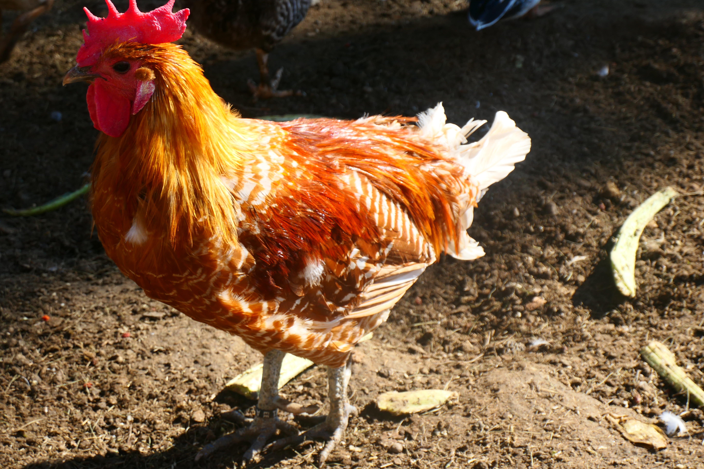
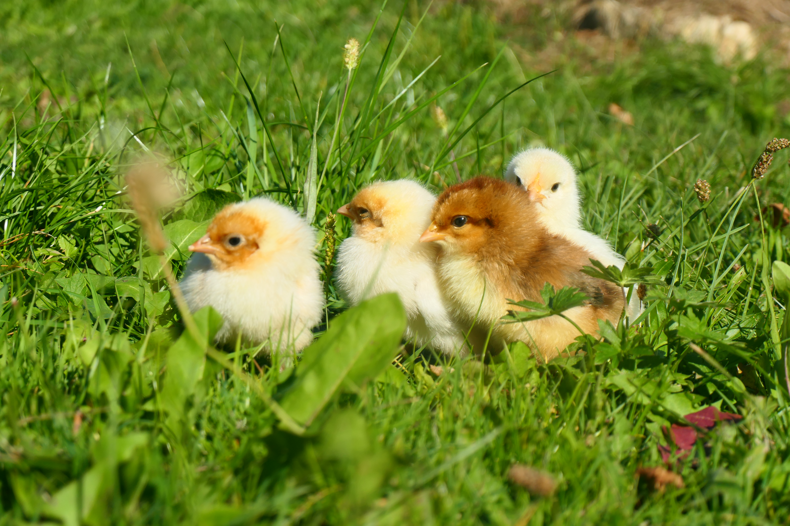
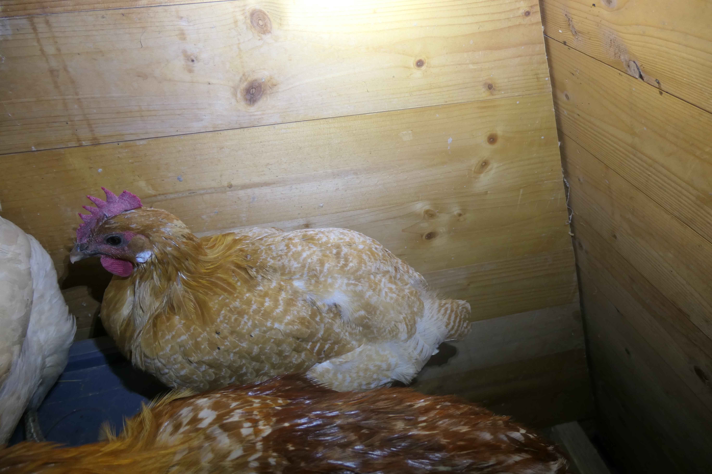
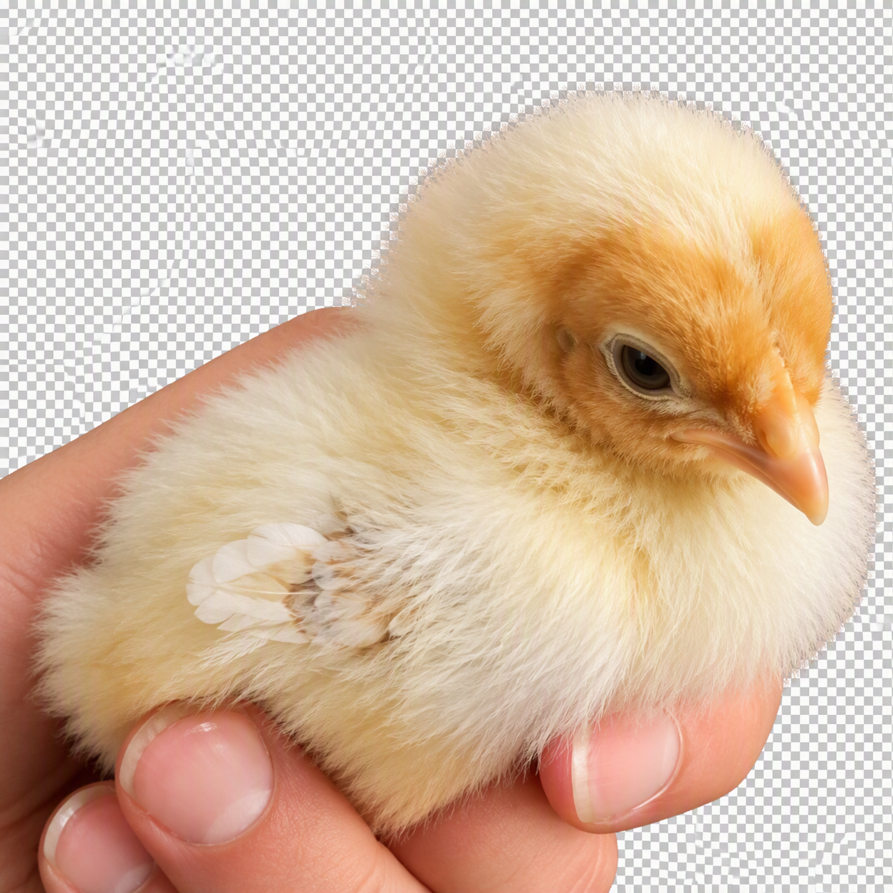

Willkommen bei „Meine Hühner“
Herzlich willkommen auf meiner Webseite über meine Hühnerzucht. Hier stelle ich die verschiedenen Hühnerrassen vor, die ich derzeit halte und züchte.
Dazu gehören Altsteirer, Seidenhühner, Brakel, Zwerg-Lakenfelder und Zwerg-Vorwerk.
Einblicke in meine Hühnerzucht

Zwerg Lakenfelder
Elegantes schwarz-weißes Zwerghuhn mit lebhaftem Charakter.

Zwerg Vorwerk
Robuste und zutrauliche Rasse mit goldgelbem Gefieder.

Altsteirer Glucke
Fürsorgliche Mutter mit natürlichem Brut- und Führungsverhalten.

Altsteirer Hahn
Wachsamer Freilandhahn einer alten österreichischen Hühnerrasse.

Kükenschar
Seidenhuhn- und Altsteirerküken wachsen gemeinsam auf.

4 Tage alte Küken
Neugierig erkunden die Küken ihre Umgebung.

Brakel Hahn
Aktiver und eleganter Hahn mit typischer Brakelzeichnung.

Erste Ausflüge
Schon nach wenigen Tagen genießen die Küken die frische Wiese.

Brakel Henne
Lebhafte Landhuhnrasse mit guter Legeleistung.

Brakel Küken
Die typischen Farben und Zeichnungen zeigen sich bereits früh.

Altsteirer Küken
Junge Altsteirer mit ihrem charakteristischen braunen Flaumkleid.
Über meine Hühnerzucht
Die Haltung und Zucht von Hühnern ist seit vielen Jahren eines meiner größten Hobbys. Besonders interessant finde ich den Erhalt seltener und traditioneller Rassen sowie die unterschiedlichen Eigenschaften und Verhaltensweisen der Tiere.
Auf den einzelnen Unterseiten können die verschiedenen Hühnerrassen genauer kennengelernt werden. Dort finden sich Informationen über Herkunft, Aussehen, Eigenschaften und Besonderheiten der jeweiligen Rasse.
Meine Hühnerrassen
- Altsteirer
- Seidenhühner
- Brakel
- Zwerg-Lakenfelder
- Zwerg-Vorwerk
Was erwartet dich auf dieser Webseite?
- Vorstellung meiner verschiedenen Hühnerrassen
- Informationen über Herkunft und Eigenschaften
- Einblicke in meine Hühnerzucht
- Eigene Bilder meiner Tiere
- Eine Galerie
- Erklärungen zu HTML und CSS
- Informationen zur Bildbearbeitung
- Responsive Webdesign
Verbindung zur Medientechnik
Diese Webseite wurde im Rahmen des Unterrichtsfaches Medientechnik (MEDT) erstellt.
Dabei werden verschiedene Themen der Webentwicklung und digitalen Medien praktisch umgesetzt und erklärt. Dazu gehören unter anderem HTML, CSS, Bootstrap, Bildbearbeitung, Webdesign und Responsive Design.
Fachlicher Bezug zur Medientechnik: Die Webseite verbindet ein persönliches Thema mit praktischen Kenntnissen aus der Webentwicklung und Mediengestaltung.
Projektplanung
Die Entwicklung einer Webseite beginnt mit einer sorgfältigen Planung. Zuerst werden Ziel, Zielgruppe und Inhalte festgelegt. Danach wird die Struktur der Webseite geplant und die einzelnen Seiten werden miteinander verknüpft.
Für dieses Projekt wurde eine Hauptseite erstellt. Von dort aus können die einzelnen Hühnerrassen, die Galerie, die Seite „Über mich“ und das Impressum aufgerufen werden.
Fachlicher Bezug zur Medientechnik: Eine gute Projektplanung hilft dabei, Inhalte logisch zu strukturieren und eine übersichtliche Navigation zu entwickeln.
Webdesign
Beim Webdesign werden Inhalte so gestaltet, dass sie übersichtlich, verständlich und ansprechend dargestellt werden.
Für meine Webseite wurden hauptsächlich natürliche Farben wie Grün, Beige und Braun verwendet. Diese Farben passen zum Thema Hühnerzucht und schaffen ein einheitliches Erscheinungsbild.
Zusätzlich werden abgerundete Ecken, Schatten und Abstände verwendet. Dadurch werden die einzelnen Bereiche der Webseite besser voneinander getrennt.
Navigation
Die Navigation ermöglicht den Besucherinnen und Besuchern, schnell zwischen den verschiedenen Bereichen der Webseite zu wechseln.
Die Navigationsleiste wurde mit Bootstrap erstellt und passt sich automatisch an unterschiedliche Bildschirmgrößen an. Auf Smartphones wird die Navigation über das Menü-Symbol geöffnet.
Verwendete Technologien
- HTML – Strukturierung der Webseiten
- CSS – Gestaltung und Layout
- Bootstrap – responsive Komponenten
- Bilder – visuelle Darstellung meiner Hühner
- JavaScript – Funktionen des Bootstrap-Carousels
Wie ich zu meinen Hühnern kam
Meine Begeisterung für Hühner begann im Alter von neun Jahren. Meine Schwester bekam damals ein Hühnerpaar wegen der Eier. Nach einiger Zeit verlor sie jedoch das Interesse daran und ich übernahm zunehmend die Versorgung der Tiere.
Mit der Zeit wurde aus dieser Aufgabe ein Hobby. Heute halte und züchte ich mehrere verschiedene Hühnerrassen und beschäftige mich besonders gerne mit seltenen und traditionellen Rassen.
Vielen Dank für deinen Besuch auf meiner Webseite!
© Atina Rodler 2026